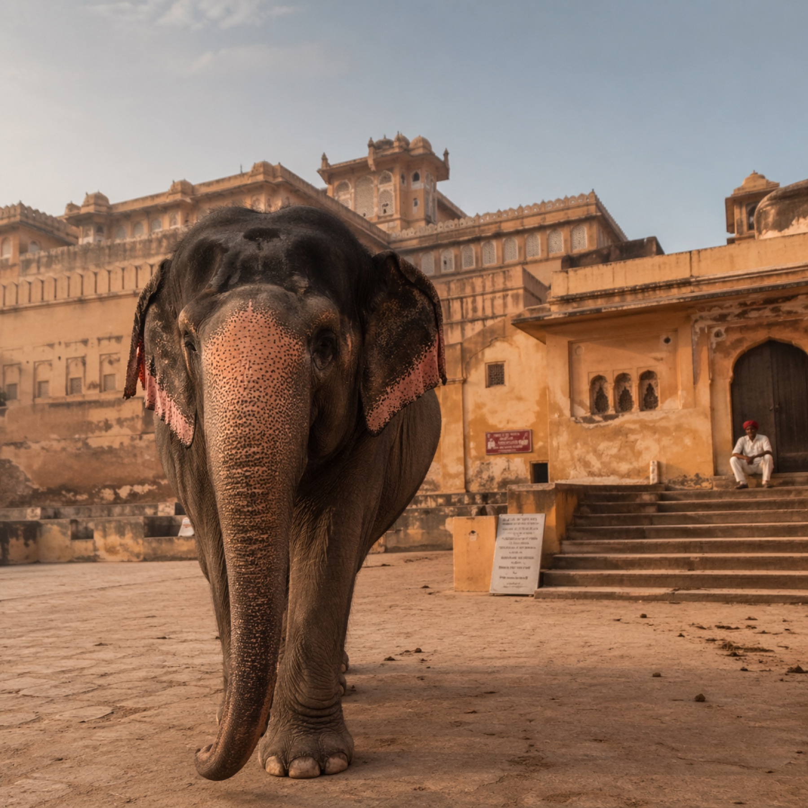

+ + + + [ FIG. 01 / SUBJECT ]Полевое досье по единице ELEPHAS MAXIMUS INDICUS — индийскому слону. Страна, где гиганта ведут через храмовые ворота как царя, где его хоронят вместе с именем, где он старше империй и моложе богов. Пять глав — от мифологии до когнитивных метрик.
Ганеша — устранитель препятствий и бог мудрости. Первородный сын Шивы и Парвати. Изображается полным человеком с головой слона и одним бивнем, восседает на крысе. Первые иконы датированы V веком; культ ганапатьи оформился в VI.
Канонический миф: Шива в гневе лишил сына головы, забросив её так далеко, что никто не смог найти. Чтобы вернуть жену Парвати, он приставил мальчику голову первого встреченного слонёнка. Так возникла иконография, которая за полторы тысячи лет стала символом всей цивилизации.
Сами слоны присутствуют в искусстве субконтинента с 2500 года до н. э. — изображения найдены на печатях Хараппской цивилизации. В ведической традиции белый слон Айравата служит ваханой бога Индры, владыки молнии и дождя.
Слон как символ силы, плодородия, царства. В военной доктрине индийских империй — от Магадхи (VI в. до н. э.) до Палов (VIII в. н. э.) — боевые слоны стояли в авангарде армии вместе с колесницами, конницей и пехотой.
Тришшур Пурам — крупнейший храмовый фестиваль Индии. Придуман махараджей Кочина Сактан Тампураном в конце XVIII века. Ежегодно превращает керальский город в эпицентр ритуала, музыки и огня.
| No. | RITUAL / НАЗВАНИЕ | DESCRIPTION / ОПИСАНИЕ | DUR / ВРЕМЯ |
|---|---|---|---|
| > 01 | ПООРА ВИЛАМПАРАМ |
В полдень слон толкает хоботом южные ворота храма Вадаккуннатхан. С этого жеста начинается фестиваль. На спине — икона Нейтилаккавиламмы. | 12:00 / OPEN |
| > 02 | КУДАМАТТАМ | Два ряда по 15 слонов лицом к лицу. Носильщики меняют расшитые шёлком зонты в рифме — кто красивее. Толпа выбирает победителя. | 2–3 ч |
| > 03 | НЕТТИПАТТАМ | Золотая попона, закрывающая лоб и уши. Украшена позолоченными кругами. Ремесленник делает её годами. Вес — до 20 кг. | ALL-DAY |
| > 04 | ЧАМАЯМ | Полный убор: колокольчики, опахало из павлиньих перьев (Алаваттом), веер Венчамарам, нагрудники. Всё шьётся к фестивалю заново. | ALL-DAY |
| > 05 | ВЕДДИКЕТТУ | Ночной фейерверк на поле Теккинкаду. Длится часы. Одна из самых ожидаемых традиций Азии. | 03:00 / NIGHT |
Индийский слон — национальное достояние страны. По переписи 2017 — 27 312 диких особей (~75% мировой популяции азиатского слона). Три полевые точки рекомендованы для наблюдения.
| No. | LOCUS / ЗАПОВЕДНИК | COORDINATES | DESCRIPTION | WINDOW |
|---|---|---|---|---|
| P—01 |
ПЕРИЯР
KERALA / JUNGLE
|
09°33′N 77°10′E |
Тигриный заповедник вокруг искусственного озера. Слонов встречают с лодок на рассвете, когда стада выходят к воде. В охраняемой зоне — около 1000 особей. | ОКТ — ФЕВ |
| P—02 |
КАЗИРАНГА
ASSAM / SAVANNAH
|
26°34′N 93°10′E |
Объект Всемирного наследия ЮНЕСКО. Саванны, болота, густая трава. Слоны соседствуют с индийским носорогом и бенгальским тигром. Сафари на джипах. | НОЯ — АПР |
| P—03 |
БАНДИПУР
KARNATAKA / DRY FOREST
|
11°40′N 76°38′E |
Часть биосферы Нилгири. Сухой листопадный лес. Стада здесь особенно крупные — до 50 особей вместе. Классическое индийское сафари. | МАР — МАЙ |
Вид внесён в Красную книгу МСОП как endangered. Программа «Project Elephant» (1992) ведёт охрану коридоров миграции и противодействие браконьерству. Численность снижается на 2–3% в год.
Слоны узнают себя в зеркале. Помнят лица через годы. Различают языки. Плачут. Хоронят своих. Ниже — три метрики, верифицированные экспериментально. Наука последних 20 лет медленно догоняет то, что жители Кералы знали веками.
В тесте «в каком ведре больше яблок» индийская слониха Ашиа показала точность 90%. Контрольная группа взрослых людей — только 67%. Слоны оценивают количество не пересчётом, а напрямую.
В экспериментах индийские слоны через год безошибочно узнавали визуальные и звуковые пары. Матриархи помнят маршруты к водопоям, пройденные десятилетия назад.
Стадо подолгу стоит над умершим сородичем, прикрывает тело ветками и листьями, возвращается к этому месту годами. Подобное описано только у людей. Зоологи фиксируют ритуал десятилетиями.
Тришшур Пурам проходит с конца апреля по начало мая. Сафари в Перияре — октябрь и декабрь. Казиранга открыта до Холи. Если вы читаете это — лучшее время уже складывается.